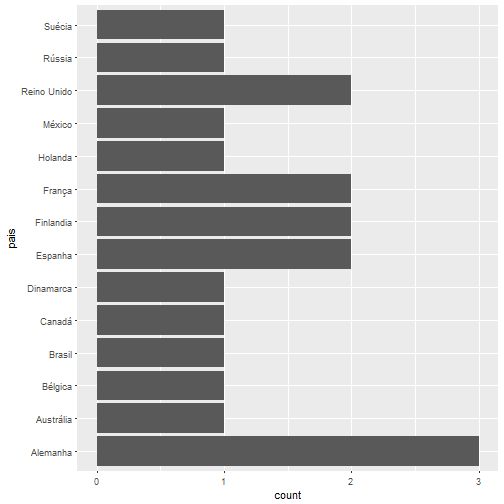

Alguns dados sobre pilotos de Formula 1
Para dar um pontapé inicial neste sitiozinho/blog/diário pessoal/ coisas que eu escrevo e espero que as pessoas gostem, vim trazer alguns dados sobre os pilotos da temporada 2017 do campeonato de formula 1.
Em muitos casos alguns simples dados sobre os envolvidos no assunto em geral podem nos dizer muito sobre a categoria em si, e como ela está nesta temporada já iniciada a alguns meses.
library(readxl) pilotos <- readxl::read_excel("C:/Users/Win7/Documents/arquivosR/pilotos.xlsx") pilotos
## # A tibble: 20 × 6 ## numeracao nome equipe dataNascimento pais ## <dbl> <chr> <chr> <dttm> <chr> ## 1 2 Stoffel Vandoorne McLaren 1992-03-26 Bélgica ## 2 3 Daniel Ricciardo Red Bull Racing 1989-07-01 Austrália ## 3 5 Sebastian Vettel Ferrari 1987-07-03 Alemanha ## 4 94 Pascal Wehrlein Sauber 1994-10-18 Alemanha ## 5 77 Valtteri Bottas Mercedes 1989-08-28 Finlandia ## 6 55 Carlos Sainz Jr. Toro Rosso 1994-09-01 Espanha ## 7 44 Lewis Hamilton Mercedes 1985-01-07 Reino Unido ## 8 33 Max Verstappen Red Bull Racing 1997-09-30 Holanda ## 9 31 Esteban Ocon Force India 1996-09-17 França ## 10 30 Jolyon Palmer Renault F1 Team 1991-01-20 Reino Unido ## 11 27 Nico Hulkenberg Renault F1 Team 1987-08-19 Alemanha ## 12 26 Daniil Kvyat Toro Rosso 1994-04-26 Rússia ## 13 20 Kevin Magnussen Haas F1 Team 1992-10-05 Dinamarca ## 14 19 Felipe Massa Williams 1981-04-25 Brasil ## 15 18 Lance Stroll Williams 1998-10-29 Canadá ## 16 14 Fernando Alonso McLaren 1981-07-29 Espanha ## 17 11 Sergio Perez Force India 1990-01-26 México ## 18 9 Marcus Ericsson Sauber 1990-09-02 Suécia ## 19 8 Romain Grosjean Haas F1 Team 1986-04-17 França ## 20 7 Kimi Raikkonen Ferrari 1979-10-17 Finlandia ## # ... with 1 more variables: titulos <dbl>
You can also embed plots, for example:
library(ggplot2) pilotos$pais
## [1] "Bélgica" "Austrália" "Alemanha" "Alemanha" "Finlandia" ## [6] "Espanha" "Reino Unido" "Holanda" "França" "Reino Unido" ## [11] "Alemanha" "Rússia" "Dinamarca" "Brasil" "Canadá" ## [16] "Espanha" "México" "Suécia" "França" "Finlandia"
ggplot(data = pilotos,aes(pais))+ geom_bar()+coord_flip()

sum(pilotos$titulos)
## [1] 10
mean(pilotos$titulos)
## [1] 0.5
as.integer(difftime(Sys.time(),pilotos$dataNascimento)/365)
## [1] 25 27 29 22 27 22 32 19 20 26 29 23 24 36 18 35 27 26 31 37
ggplot2::ggplot(data=pilotos,aes(as.integer(difftime(Sys.time(),pilotos$dataNascimento)/365)))+geom_bar()
ggplot2::ggplot(data = pilotos,aes(titulos))+geom_bar()